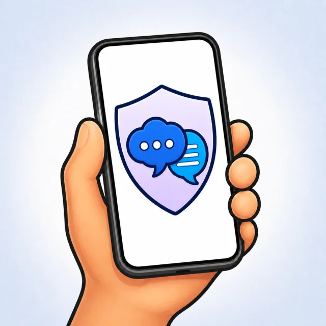
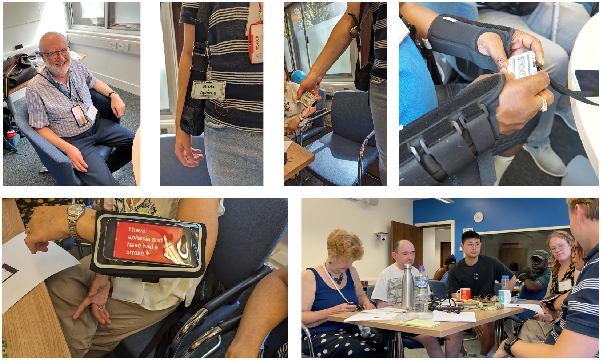
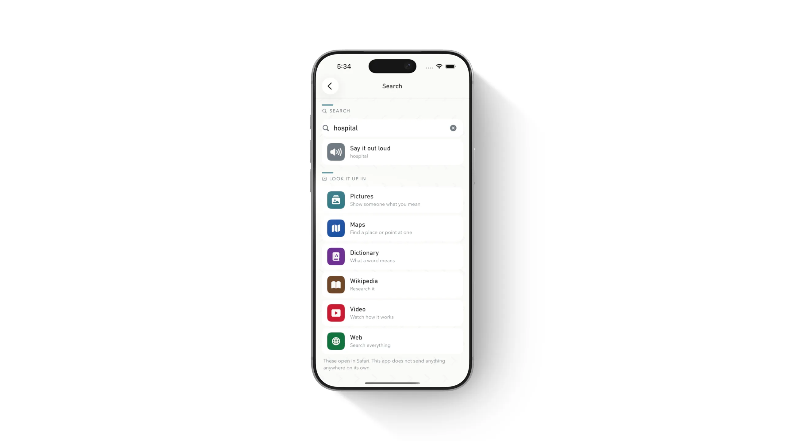
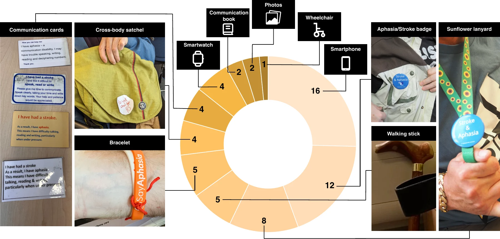
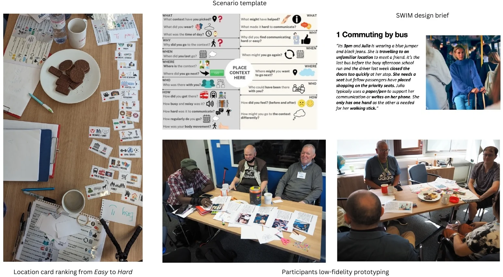
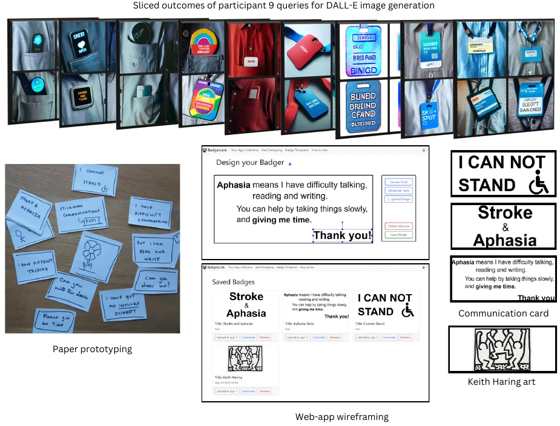
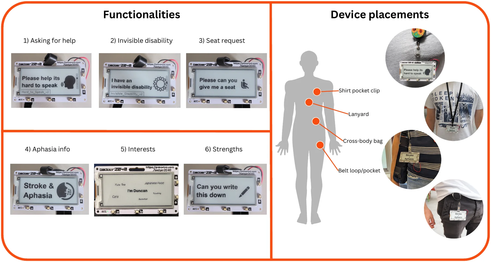
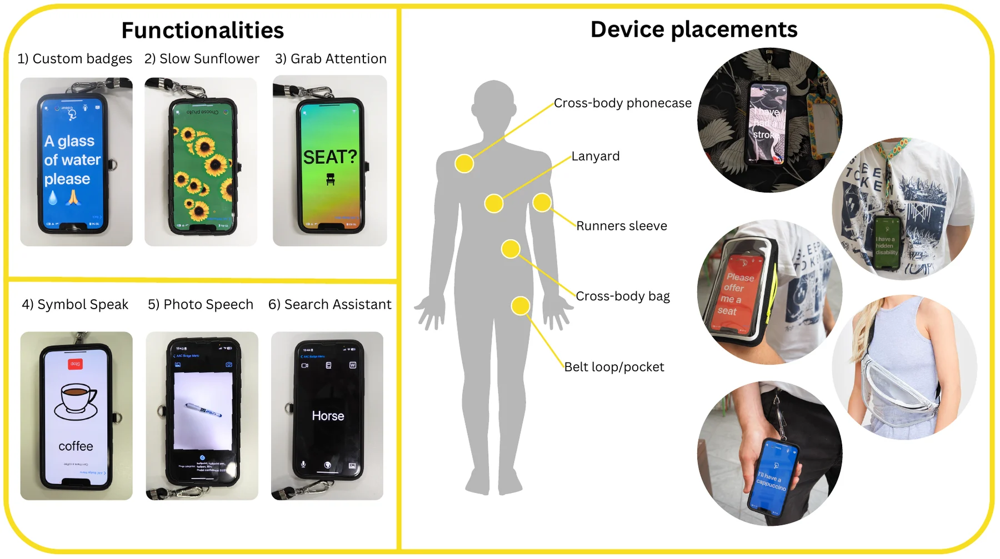
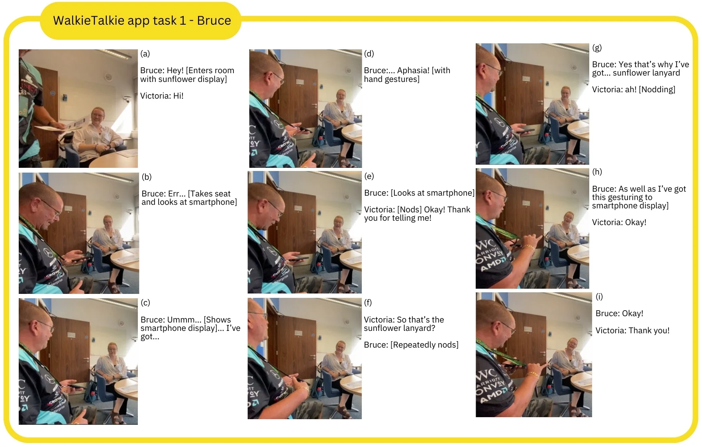

Breaking Badge

Most high-tech augmentative and alternative communication (AAC) devices are designed to speak for their user. In doing so, they can get in the way of the limited speech, gesture, facial expression and eye contact people already use. Breaking Badge explored a lighter-touch alternative: outward-facing displays that help a communication partner understand what the wearer needs, without taking over the conversation.
Walkie Talkie AAC
Walkie Talkie AAC is the live, open-source app that came directly from the Breaking Badge research. It runs on iPhone and iPad, turning a familiar device into an outward-facing communication aid. Someone can show a prepared request, create a personal badge, pair speech with symbols, identify an object from a photograph or reach useful search tools with fewer steps.
At a glance
The home screen keeps the app's main communication tools distinct and immediately recognisable.
Outward-facing badges
Prepared messages can be found quickly, spoken aloud and turned towards a communication partner. The display deliberately rotates so it is the right way up for the person reading it, then can be dimmed to black immediately after use.
Personal badges
A badge can be written in the person's own words, given a familiar symbol, adjusted by colour and shown either as a whole message or word by word.
Voice and pacing
Settings bring outward-facing display, word-by-word speed, speaking rate and voice controls together, with a built-in voice test before use.
Symbol Speak
Spoken words are paired with simple symbols, giving a communication partner another way to follow the message. Apple's Speech framework requests on-device recognition where supported; each latest word is then normalised and matched against a curated, bundled set of around 540 Mulberry symbols, including hand-tuned synonyms.
Photo to Speech
A photograph can offer several likely words for an object without uploading the image. Early builds bundled a MobileNetV2 Core ML model; the released app instead uses Vision's on-device VNClassifyImageRequest, removing the model from the download and substantially reducing storage.
Search
A single term can be spoken on-device or opened in pictures, maps, a dictionary, Wikipedia, video or the wider web. The app percent-encodes the term into a destination-specific URL and hands it to Safari, so the app itself makes no search request.

iPhone and iPad
The same communication tools adapt to the larger iPad screen, making the app useful when a tablet is already the person's preferred or most accessible device.

Starting with difficult conversations
The research involved 19 people with aphasia and five speech and language therapists across co-design and evaluation. Their own practices shaped the design space: 16 used smartphones, 12 sunflower lanyards and eight aphasia or stroke badges, while communication cards, walking sticks, bracelets, photographs and bags all supported communication in different ways. Three accessible workshops then moved from these lived practices to working prototypes.
Workshop 1 used tangible location cards and aphasia-friendly scenario templates to identify difficult communication settings. Busy cafés, public transport, hospitals and group conversations were especially challenging: unfamiliar people often failed to recognise aphasia, moved too quickly or finished someone else's words.
Workshop 2 turned those experiences into six scenario stations. Participants used fabric, card, string and stickers to make high-volume, low-fidelity wearable AAC concepts. Their ideas included lanyard displays, smart rings, attachable badges and partner-facing prompts such as “Please give me time.”

Workshop 3 narrowed the design space to badges. Participants first co-authored image-generation prompts to explore divergent ideas, then moved to paper prototypes and a constrained web canvas for wireframing displays that could work on a black-and-white eInk screen.

InkTalker
InkTalker is a lightweight, low-power smartbadge built on a 296 × 128 eInk display. Its six starting messages help the wearer ask for assistance or a seat, disclose an invisible disability, explain aphasia, share an interest and communicate their preferred ways of talking.
Physical buttons move between static or animated displays. The badge can clip to a shirt pocket, lanyard, belt or cross-body bag, while the eInk screen remains visible without continuously drawing power. This made it an affordable and familiar-feeling alternative for people who did not want to depend on a smartphone.

Research prototype: WalkieTalkie
WalkieTalkie turns an iPhone into a brighter, feature-rich wearable public display. Custom badges can change text, colour and orientation; Grab Attention progressively shifts a message towards red; and Slow Sunflower complements the recognised Hidden Disabilities Sunflower lanyard.
Three additional tools explore multimodal input. Symbol Speak pairs recognised speech with symbols, Photo Speech labels photographed objects to support word-finding, and Search Assistant reduces the steps needed to reach useful online resources. The phone can be worn on a lanyard, cross-body strap, runner's sleeve or belt clip and can still be concealed when it is not needed.

Evaluating the whole interaction
Ten people with aphasia and four speech and language therapists explored both prototypes in a focus group. Five participants then completed five role-play tasks: entering with a sunflower display, requesting a seat, responding to a drink offer, explaining aphasia and saying thanks.
Video analysis coded 248 interactions across speech, gaze, gesture, proximity and device use. Participants looked at their speaking partner 41 times and at a device 37 times; they used the displays as communication props 28 times and shifted them closer to their partner 29 times. Both devices joined the interaction without displacing participants' own voices, bodies or attention.

The evaluation also identified practical refinements. InkTalker needed larger one-handed buttons, a stronger case and more control over refresh speed. WalkieTalkie's photographed-object labels needed to better reflect local language, and both systems needed larger, more configurable text for some users.
A different role for AAC
Wearable AAC can do more than generate speech. It can disclose an otherwise invisible disability, tell another person how to communicate accessibly and reinforce the wearer's existing strengths. The most useful device is not always present or speaking: it is socially regulatable, ready when communication becomes difficult and easy to put away when it does not.